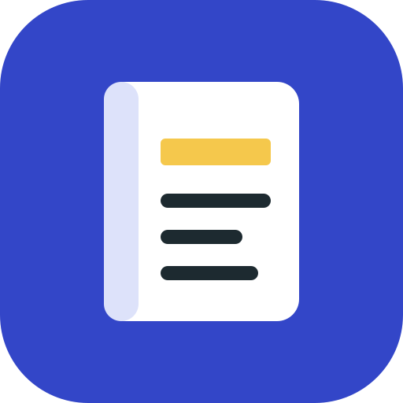

MY AIDE
업무일지·메모·일정·가계부·회의록을 한곳에서. 내 기록은 내 Google Drive에만.
폰·태블릿
설치 없이 바로 씁니다. 아이폰은 Safari, 안드로이드는 Chrome으로 여세요.
MY AIDE 열기Windows PC
화면 캡처·PC 파일 찾기·바탕화면 위젯·네이버 캘린더 연동까지 됩니다.
Windows 앱 받기Windows에서 처음 실행할 때
- 받은
MY-AIDE.exe를 두 번 누릅니다. - 파란 창 “Windows의 PC 보호”가 나오면 추가 정보 › 실행을 누릅니다. 개인이 만든 프로그램이라 유료 인증서가 없어서 나오는 안내입니다.
- “MY AIDE를 이 PC에 설치할까요?”에서 예를 누르면 시작 메뉴와 바탕화면에 바로가기가 생깁니다. 관리자 권한은 필요 없어요.
- 새 버전이 나오면 MY AIDE가 알려 주고, 버튼 한 번으로 업데이트됩니다.
- 지우려면 Windows 설정 › 앱에서 MY AIDE를 제거하세요. Google Drive의 기록은 남습니다.
처음 시작하기
- Google Drive에 저장을 누르고 내 Google 계정으로 로그인합니다.
- MY AIDE 비밀번호를 정합니다. 모든 기기에서 같은 비밀번호를 씁니다.
- 처음 쓰는 분은 사용 승인 요청을 보내고, 관리자에게 받은 승인 코드를 넣습니다.
- 안내에 따라 폰 메뉴와 AI 연결(선택)을 고르면 끝입니다.